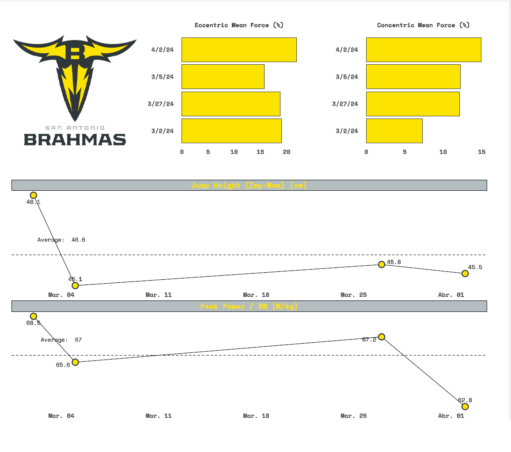
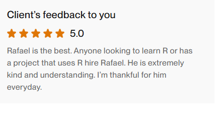
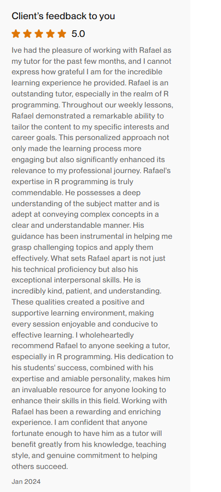

This year I created a course for a Sports Scientist that wanted to get into R. This is the course website. The course is an introduction to R with examples from Sports Science. Most of the examples are from this book.
I also worked with the client to create some visualizations for his job:

This is a short clip from one of the lectures:
This is the client’s feedback:

